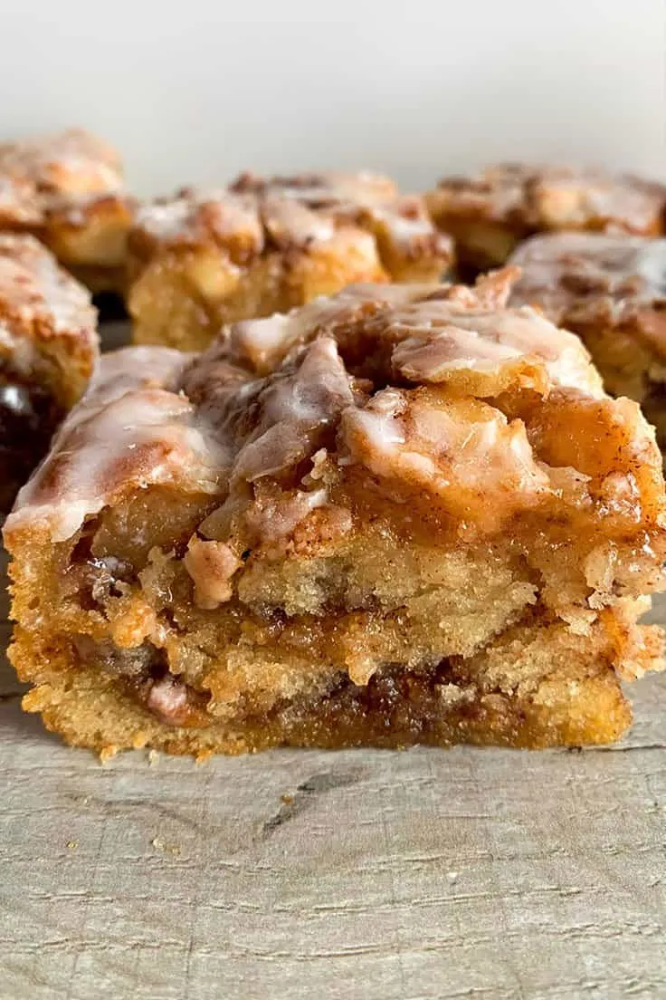

Cinnamon Swirl Apple Cake
This cinnamon swirl apple cake is one of our favorite fall recipes. Soft cake, sweet apples, and a buttery cinnamon swirl make it the perfect cozy dessert to share with family. We all love it!

Ingredients
| ✓ | Ingredient | Amount |
|---|---|---|
| Apples | ||
| Apples | 2 | |
| Granulated sugar | 1/4 cup | |
| Cinnamon | 2 tsp | |
| Cinnamon Swirl | ||
| Light brown sugar, packed | 3/4 cup | |
| Cinnamon | 2 tbsp | |
| Butter, melted | 1/2 cup + 1 tsp | |
| Cake | ||
| All-purpose flour | 2 3/4 cups + 1 tbsp | |
| Sugar | 3/4 cup + 2 tbsp | |
| Baking powder | 4 tsp | |
| Milk | 1 1/4 cups | |
| Vanilla extract | 1 tsp | |
| Large eggs, room temperature | 2 | |
| Butter, melted | 7 tbsp | |
| Glaze | ||
| Powdered sugar | 3/4 cup + 1 tbsp | |
| Milk | 4 tsp | |
Instructions
- Preheat the oven to 355°F and line a baking pan with parchment paper.
- Peel and dice the apples. Mix the sugar and cinnamon, add the apples, and toss until well coated. Set aside.
- For the cinnamon swirl, mix the brown sugar, cinnamon, and melted butter until smooth. Set aside.
- In a large bowl, mix the flour, sugar, and baking powder. Add the milk, vanilla, eggs, and melted butter. Gently stir until the batter is combined.
- Fold in the cinnamon apples and pour the batter into the prepared pan. Smooth out the top.
- Dollop the cinnamon mixture over the batter and swirl it through with a knife.
- Bake for 45-50 minutes, or until golden and a toothpick inserted into the center comes out clean.
- Mix the powdered sugar and milk until smooth.
- Drizzle the glaze over the warm cake.
Tips & Notes
Allow the cake to cool slightly before serving.